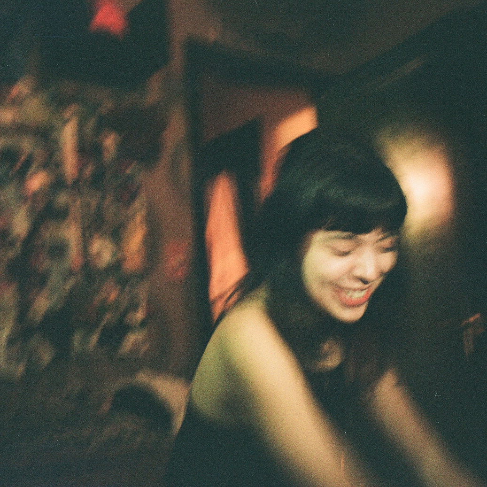

EILEEN LU

ABOUT
I find myself constantly experimenting and working in different fields of interest but only for brief moments. Although I consider the majority of my work as objective, I believe that collectively they reflect the fluxes that are a defining part of who I am today. Thus, my work is constantly developing and never truly cohesive. With every new discipline that I venture towards, I hope to bring along the characteristics and methodologies achieved from previous experiences and studies, holding onto the things I care for most.
LINKS
SAMPLE WORK
ENTRIES is an app that allows users to record the various places that they encounter during their everyday routine. By uploading a picture of the door handle/knob at each location, the user can see and organize a collective map of everywhere they have ever been. Entries goal is to assist users in forming a simple cataloged reflection of themselves.